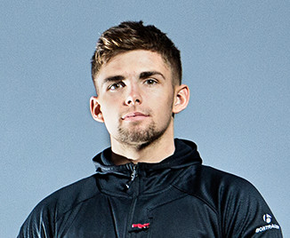

|  |
Taylor Vernon is “One tough cookie” RedBull.com He shares the determination to succeed that characterises the Trek Factory Racing Downhill team and has proved his extraordinary dedication by recovering from a massive injury a year earlier than doctors predicted to take his first World Cup victory as a Junior. Along with Belgian superstar Martin Maes, Taylor was the first graduate of the Atherton Academy and he’ll race his second season as an Elite in 2016.
Taylor isnt the tallest rider on the circuit, When he was 11 and wanted to ride Downhill, dad Jason had to custom-build him a bike because he was still so small! But that didn’t stop young Tay who was soon demonstrating his aggressive, moto-influenced style to begin accumulating victories at local races throughout South Wales.
By the time sixteen year old Taylor signed to ride with “his heros” in December 2012 he had already shown considerable promise. In the 2012 season he won junior titles at the British National Championships, British Downhill Series Overall and Extreme DH Summer Series, Llangollen. His cheeky sense of humour andan appetite to work for success made him a natural fit with the team and a firm media favourite.
|